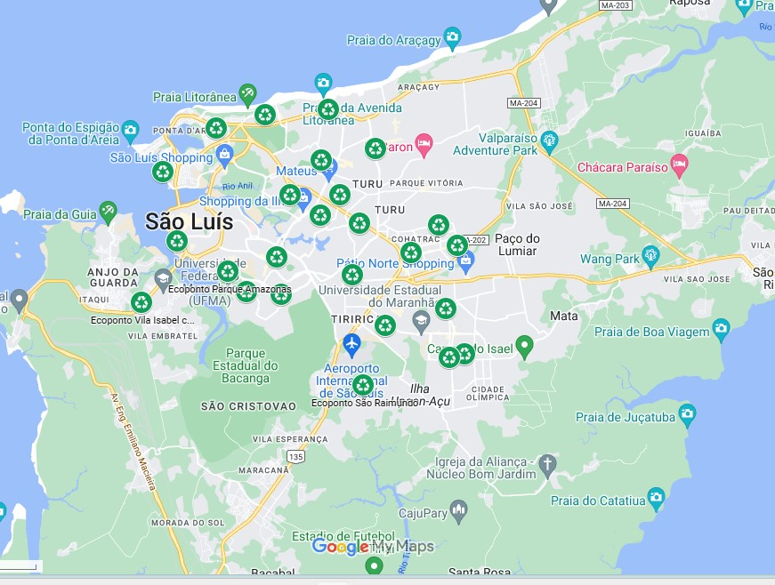

O Eco Ponto está localizado no seguinte endereço:
Ecoponto Parque Amazonas, Avenida dos Africanos, s/nº, Bairro de Fátima, entrada do Parque Amazonas;
Ecoponto do Angelim Rua 27, s/nº (antes do Makro, próximo ao Restaurante Chico Noca);
Ecoponto do Bequimão, Avenida 1, s/nº, Bequimão;
Ecoponto Habitacional Turu Travessa G, s/nº, Habitacional Turu;
Ecoponto Jardim América, Avenida 03, s/nº, Jardim América (Ao lado da União de Moradores)
Ecoponto Jardim Renascença, Rua Netuno, próximo à Paróquia de São Paulo Apóstolo
Ecoponto Residencial Esperança, Rua Doutor Ribeiro, s/nº, Residencial Esperança
Ecoponto Cidade Operária - Unidade 101, Avenida Este 203, Cidade Operária, próximo ao Campo do Real
Ecoponto São Francisco, Avenida Ferreira Gullar, ao lado da Estação Elevatória da Caema
Ecoponto Anil, Rua 02, Conjunto Rancho Dom Luiz, Anil
Ecoponto São Raimundo, Rua 03, Quadra 50, próximo ao ponto final do bairro
Ecoponto Cidade Operária - Unidade 205, Avenida Leste 103, próximo ao à UEB Mata Roma
Ecoponto Itapiracó, Avenida Joaquim Mochel, Cohatrac IV, próximo ao Campo do Léozão
Ecoponto Sacavém, Avenida dos Africanos, próximo ao antigo Habib's
Ecoponto Parque dos Nobres, Rua dos Imperadores, próximo à Igreja Nossa Senhora do Perpétuo Socorro
Ecoponto Barreto, Rua Cinco de Janeiro, Barreto/IvarSaldanha, próximo ao Centro Educacional Coelho Neto
Ecoponto Primavera, Avenida Contorno Sul, s/n, Residencial Primavera, próximo ao Colégio Shalom
Ecoponto Cohaserma, Rua 14, s/nº, Cohaserma
Ecoponto Centro, Avenida Senador Vitorino Freire, s/nº, Anel Viário
Ecoponto Vila Isabel, Avenida dos Portugueses, s/nº, Vila Isabel
Ecoponto Cohab Anil, Avenida Principal, s/nº, Planalto Anil I, próximo ao Fest Lanches
Ecoponto Avenida dos Holandeses, Avenida dos Holandeses, s/nº, Calhau, próximo à antiga loja Jacaúna
Ecoponto Calhau Borborema, Avenida Borborema, s/nº, Calhau
Ecoponto Recanto do Vinhais;
Ecoponto Jardim São Cristóvão
Horário de funcionamento:
- Segunda a Sexta: 8h às 13h e das 14h às 18h
- Sábado e Domingo: Fechado